Piston and connecting rod removal (4JK1)
1. Battery ground cable disconnect
1. Open the engine hood assembly.
2. Disconnect the battery ground cable from the battery.
Caution
- Do not disconnect within 1 minute after turning OFF the ignition switch.
3. Raise vehicle using the jack.
2. Underguard removal
Note
- The following applies to models with an under air deflector.
1. Remove the under air deflector from the frame.
Note
- Remove the 5 bolts and clip.

- Bolt
- Clip
Note
- The following applies to models with front and rear underguard.
2. Remove the front underguard from the frame.
Note
- Remove the 5 bolts.
3. Remove the rear underguard from the frame.
Note
- Remove the 4 bolts.

- Front underguard
- Rear underguard
- Bolt
Note
- The following applies to models with front and rear underguard and an oil pan guard.
4. Remove the front underguard from the frame.
Note
- Remove the 5 bolts.
5. Remove the oil pan guard from the frame.
Note
- Remove the 4 bolts.
6. Remove the rear underguard from the frame.
Note
- Remove the 4 bolts.

- Front underguard
- Oil pan guard
- Bolt oil pan guard
- Bolt
- Rear underguard
3. Coolant drain
1. Drain coolant from the radiator.
Note
- Open the drain plug at the bottom of the radiator.

2. Remove the radiator cap from the radiator.
Warning
- In order to prevent burns, do not open the cap when the engine and radiator are hot.
- Heat liquid and steam may gush out by pressure.
4. Engine oil drain
1. Drain the engine oil from the oil pan.
Note
- After draining oil, tighten the drain plug to the specified torque.
Tightening torque： 44 N・m { 4.5 kgf・m / 32 lb・ft }
Caution
- Do not forget to tighten the drain plug.
5. Engine hood assembly removal
1. Open the engine hood.
Note
- Support the engine hood.
- Disconnect the tube from the washer nozzle.
2. Remove the hinge bolt from the engine hood.
3. Remove the engine hood from the hinge.
Note
- Before removing the hinge from the engine hood, put a marking of the hinge location for putting the hinge back in place.
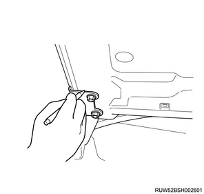
6. Engine cover removal
1. Remove the engine cover from the engine.

- Engine cover
7. Wiper arm cover removal
1. Remove the wiper arm cover from the wiper arm.
8. Wiper arm removal
1. Remove the wiper arm from vehicle.
Note
- Remove the nut to remove the wiper arm and the blade.

- Wiper arm cover
- Nut
- Wiper arm, blade
9. Side cowl cover removal
1. Remove the side cowl cover from the body.

- Side cowl cover
10. Cowl cover removal
1. Disconnect the washer hose from the clip.
2. Remove the grommet from the cowl panel.
Note
- Push the grommet down inside the cowl panel.

- Grommet
- Washer hose
3. Remove the cowl cover from the cowl panel.
11. Wiper linkage disconnect
1. Disconnect the wiper linkage from vehicle.
Note
- Remove the bolt and nut from the wiper linkage.
- Remove the connector from the wiper motor.

- Nut
- Bolt
12. Cowl panel removal
1. Remove the cowl panel from vehicle.
Note
- Remove the 8 bolts.

13. Intake air duct removal
1. Remove the intake air duct from the turbocharger and the intercooler.
Note
- Remove the part together with the intake hose.

14. Blow-by hose disconnect
1. Disconnect the blow-by hose from the cylinder head cover.
15. Air cleaner assembly removal
1. Disconnect the harness connector from the MAF sensor.
2. Disconnect the harness connector from the barometric pressure sensor.
3. Disconnect the vacuum hose from the air cleaner assembly.
4. Disconnect the intake pipe from the turbocharger assembly.
5. Remove the air cleaner assembly from vehicle.

- Air cleaner assembly
- MAF sensor
- Vacuum hose
- Blow-by hose
- Intake pipe
- Barometric pressure sensor
16. Boost pressure sensor disconnect
1. Disconnect the connector from the boost pressure sensor.

17. Intake air duct removal
1. Remove the intake air duct from the intake throttle valve and the intercooler.
Note
- Remove the part together with the intake hose.

18. Heater pipe removal
Note
- Models with heater
1. Disconnect the heater hose from the heater pipe.
Note
- Disconnect the 2 heater hoses together.

- Heater hose
2. Remove the heater pipe from the inlet manifold.
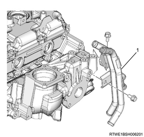
- Heater pipe
19. Battery removal
1. Disconnect the battery ground cable from the frame.
2. Disconnect the battery cable from the battery.
3. Remove the battery bracket from the frame.
4. Remove the battery from vehicle.
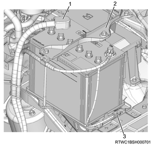
- Battery cable
- Battery bracket
- Earth
20. Fuse box disconnect
1. Remove the fuse box cover from the fuse box.
2. Disconnect the engine harness from the fuse box.
3. Disconnect the battery harness from the fuse box.
21. Radiator upper hose removal
1. Remove the radiator upper hose from the water outlet pipe and the radiator.

- Radiator upper hose
22. Radiator reserve tank removal
1. Disconnect the radiator reserve tank hose from the radiator.
2. Remove the radiator reserve tank from the upper fan guide.

23. Generator disconnect
1. Disconnect the harness from the generator.
24. A/C compressor drive belt removal
1. Remove the A/C compressor drive belt from the pulley.

- A/C compressor drive belt
25. Cooling fan belt removal
1. Loosen the adjust bolt using a wrench.
Note
- Loosen the idle pulley tension adjust bolt.
2. Remove the cooling fan belt from the pulley.
26. Generator removal
1. Remove the upper bracket from the timing gear case and the generator.

2. Remove the generator from the lower bracket.

27. A/C compressor assembly disconnect
1. Remove the A/C compressor assembly from the A/C compressor bracket.

- A/C compressor bracket
- A/C compressor
28. A/C compressor bracket removal
1. Remove the A/C compressor bracket from the cylinder head.

29. Tension pulley removal
1. Remove the tension pulley from the cylinder head.
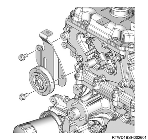
30. Fan guide removal
1. Remove the fan guide from the radiator.
Note
- Remove the clips and bottom locks on both sides and remove the upper fan guide.

- Upper fan guide
- Clip
- Lower fan guide
- Fan shroud
31. Cooling fan removal
1. Remove the cooling fan from the fan clutch assembly.

- Fan clutch assembly
- Cooling fan
32. Cooling fan clutch removal
1. Remove the cooling fan clutch from the water pump assembly.
Note
- Remove the part together with the cooling fan.

33. Fan pulley removal
1. Remove the fan pulley from the water pump assembly.
34. Fan shroud removal
1. Remove the fan guide from the radiator.
Note
- Remove the lower fan guide together with the fan shroud.
35. Glove box removal
1. Remove the glove box from the instrument panel.

- Glove box
- Instrument panel assist side lower cover
36. Instrument panel assist-side lower cover removal
1. Remove the instrument panel assist-side lower cover from the instrument panel.
Note
- Remove the 4 screws.

37. ECM disconnect
1. Disconnect the harness connector from the ECM.
Note
- Pull out the harness to the engine room side.
2. Disconnect the harness from the frame.
38. Vacuum hose disconnect
1. Disconnect the vacuum hose from the vacuum pipe.
2. Remove the harness bracket from the inlet manifold and the common rail (fuel rail) bracket.
39. Fuel hose disconnect
1. Disconnect the fuel hose from the fuel supply pump.
2. Disconnect the fuel hose from the fuel leak-off pipe.
Caution
- Cover the exposed portion to prevent foreign material from getting into the fuel system.

- Fuel hose
40. Exhaust pipe adapter removal
1. Remove the exhaust pipe adapter from the turbocharger.
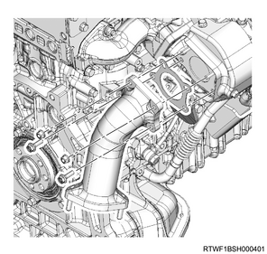
41. Power steering oil pump assembly removal
1. Remove the power steering oil pump from the timing gear case.
Note
- Remove the power steering pump together with the hose.

- Power steering oil pump
- Nut
2. Remove the power steering oil hose from the bracket.
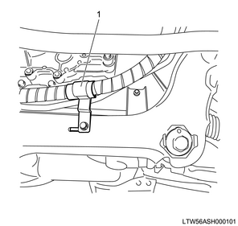
- Bracket
42. Radiator lower hose disconnect
1. Disconnect the radiator lower hose from the engine.
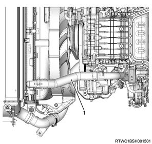
- Radiator lower hose
43. Transmission oil level gauge tube removal
1. Remove transmission oil level gauge tube from the oil pan.
44. Oil level gauge guide tube removal
1. Remove the oil level gauge from the oil level gauge guide tube.
2. Remove the oil level gauge guide tube from the crankcase.
45. Starter motor removal
1. Disconnect the earth cable from the starter motor.
2. Remove the starter motor from the rear plate.
46. Transmission assembly removal
47. Clutch assembly removal
48. Engine mounting disconnect
1. Install the front engine hanger to the cylinder head.

SST: 5-8840-2999-0 - front engine hanger

- Front engine hanger
- M10 × 1.5 × 25 mm
- M10 × 1.5 × 25 mm
2. Install the rear engine hanger to the cylinder head.
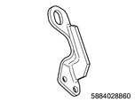
SST: 5-8840-2886-0 - rear engine hanger

Tightening torque： 25 N・m { 2.5 kgf・m / 18 lb・ft }
3. Install the wire to the engine hanger and the hoist.
Note
- Keep the engine suspended but not lifted up.
4. Disconnect the engine mounting from the frame.
49. Engine assembly removal
1. Remove the engine assembly from vehicle.
50. Oil pan removal
1. Remove the oil pan from the crankcase.
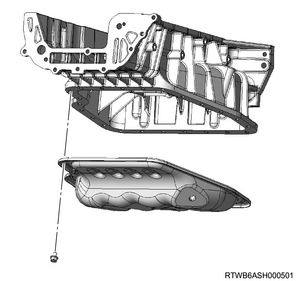
2. Disconnect the earth cable from the crankcase.
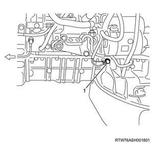
- Ground cable
51. Intake throttle valve disconnect
1. Disconnect the connector from the intake throttle valve.
52. Intake throttle valve removal
1. Remove the intake throttle valve from the inlet manifold.
2. Remove the gasket from the intake throttle valve.

- Intake throttle valve
- Gasket
53. EGR valve disconnect
Note
- The following applies to models with EGR.
1. Disconnect the connector from the EGR valve.
54. Vacuum hose disconnect
1. Disconnect the vacuum hose from the inlet manifold.
55. Leak-off pipe removal
1. Remove the leak-off pipe from the fuel supply pump and the common rail (fuel rail) assembly.
Caution
- Cover the exposed portion to prevent foreign material from getting into the fuel system.
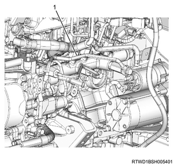
- Leak-off pipe
56. Bracket removal
1. Disconnect the vacuum hose from the turbocharger control solenoid.
2. Disconnect the connector from the turbocharger control solenoid.
3. Remove the bracket from the cylinder head cover.

57. Injection pipe removal
1. Remove the clip from the injection pipe.
2. Remove the injection pipe from the injector and the common rail (fuel rail) assembly.

Caution
- Do not reuse the injection pipe.
58. Glow plug connector removal
1. Remove the glow plug connector from the glow plug.
Note
- Remove it together with the glow plug terminal.

- Glow plug terminal
- Glow plug connector
59. Glow plug removal
1. Remove the glow plug from the cylinder head.

- Glow plug
60. Water pipe removal
1. Disconnect the turbocharger water feed hose from the outlet pipe.
2. Remove the water pipe from the cylinder head assembly.

61. Vacuum hose removal
1. Remove the vacuum hose from the turbocharger and the vacuum pipe.
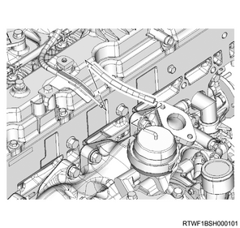
62. Turbocharger water feed pipe disconnect
1. Disconnect the turbocharger water feed hose from the water feed and return pipe.

- Turbocharger water feed hose
- Turbocharger water return hose
63. Water hose disconnect
1. Disconnect the water hose from the oil cooler.
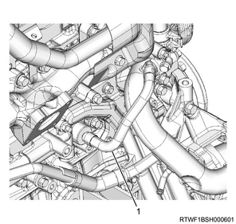
- Water hose
64. Exhaust manifold heat protector removal
1. Remove the exhaust manifold heat protector from the exhaust manifold.

65. EGR pipe removal
Note
- The following applies to models with an EGR.
1. Remove the EGR pipe from the inlet manifold and the exhaust manifold.

66. Turbocharger water return hose disconnect
1. Disconnect the turbocharger water return hose from the water feed and return pipe.
- Turbocharger water feed hose
- Turbocharger water return hose
67. Turbocharger feed oil pipe removal
1. Remove the turbocharger feed oil pipe from the turbocharger and the oil cooler.

- Turbocharger feed oil pipe
68. Oil return pipe removal
1. Remove the oil return pipe from the turbocharger and the crankcase.

69. Water pipe removal
1. Disconnect the water pipe from the water intake pipe.
2. Remove the water pipe from the oil cooler.
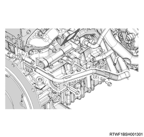
70. Water intake pipe removal
1. Remove the water intake pipe from the oil filter and the oil cooler assembly.
Note
- Remove it with the hose attached.

71. Idle pulley removal
1. Remove the idle pulley from the generator bracket.
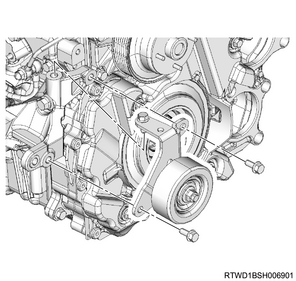
72. Generator bracket removal
1. Remove the generator bracket from the cylinder block.
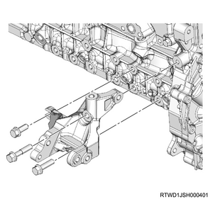
73. Oil filter removal
1. Remove the oil filter from the oil cooler assembly.
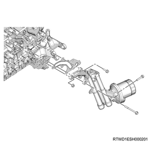
74. Injector disconnect
1. Disconnect the connector from the injector.
75. Fuel leak-off hose removal
1. Remove the fuel leak-off hose from the leak-off pipe.

- Fuel leak-off hose
- Injector connector
Caution
- Do not reuse the clip of the fuel leak-off hose.
2. Remove the leak-off pipe from the injector.

- Injector leak-off pipe
- Clip
Caution
- Do not reuse the leak-off pipe and the clip.
76. Vacuum pipe removal
1. Remove the vacuum pipe from the cylinder head cover.

Note
- Remove it as a set with the harness bracket. (for LHD models)

- Harness bracket
77. Cylinder head cover removal
1. Disconnect the harness clip from the cylinder head cover.

2. Remove the cylinder head cover from the cylinder head.

78. Injector removal
1. Remove the injector from the cylinder head.
Note
- Loosen the injector clamp fixing bolt to remove the injector clamp.
- If it is difficult to remove the injector, use a remover.
2. Remove the injector clamp from the injector.
Caution
- Cover the exposed portion to prevent foreign material from getting into the fuel system.
- Store the removed injector with the cylinder number on it.
- Take sufficient care not to hit the injector hole.
- Absolutely never touch the injector solenoids because that can hinder their performance or cause damage.
3. Remove the gasket from the injector.
4. Remove the O-ring from the injector.
79. Crankshaft adjustment
1. Align the No.1 cylinder to compression top dead center.
Note
- Rotate the crankshaft in the forward direction (clockwise), and align the No. 1 cylinder piston to compression top dead center.
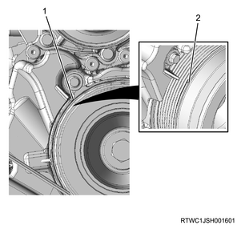
- Top dead center alignment mark on the gear case cover
- Top dead center alignment mark on the crank pulley
80. Baffle plate removal
1. Remove the baffle plate from the cylinder head.

81. Noise cover removal
1. Remove the noise cover from the timing chain lower cover.

82. Timing chain lower cover removal
1. Remove the timing chain lower cover from the gear case cover.

83. CMP sensor disconnect
1. Disconnect the connector from the CMP sensor.

- CMP sensor
84. Timing chain upper cover removal
1. Remove the timing chain upper cover from the cylinder head.

- Timing chain upper cover
85. Fuel supply pump preparation
1. Turn the crankshaft.
Note
- Rotate the crankshaft in the forward direction (clockwise), and align the No. 1 cylinder piston to compression top dead center.
- Check the TDC alignment position using a mirror, etc.
- Top dead center alignment mark on the gear case cover
- Top dead center alignment mark on the crank pulley
Note
- Confirm that the alignment marks of the camshaft bearing cap and the camshaft are aligned.

- Alignment mark
86. Supply pump gear nut removal
1. Turn the nut.
Note
- Loosen the nut of the supply pump gear.
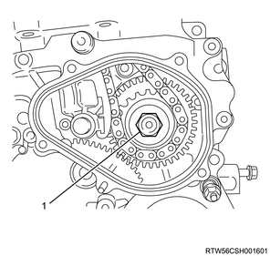
- Supply pump gear nut
87. Timing chain tensioner removal
1. Remove the oil pipe from the timing chain tensioner.
2. Remove the timing chain tensioner from the cylinder head.

- Oil pipe
- Timing chain tensioner
- Gasket
88. Timing chain lever pivot removal
1. Remove the timing chain lever pivot from the timing chain tension lever.

89. Sprocket removal
1. Remove the nut from the sprocket.
2. Remove the sprocket from the supply pump gear.

- Timing chain lever pivot
- Sprocket
- Nut
Note
- Lift up the timing chain.
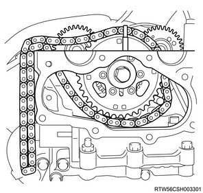
90. Supply pump gear removal
Note
- Mark the alignment position of the idle gear A and supply pump gear.

1. Remove the supply pump gear from the fuel supply pump using the gear puller.
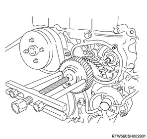
91. Fuel supply pump removal
1. Disconnect the harness connector from the fuel temperature sensor.
2. Disconnect the harness connector from the FRP regulator.

- Fuel temperature sensor
- FRP regulator
3. Remove the fuel supply pump from the timing gear case.
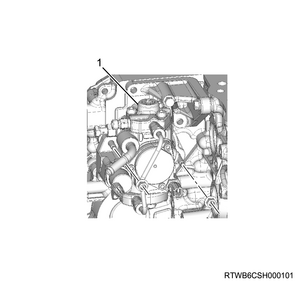
- Fuel supply pump
Caution
- Do not hold the high-pressure pipe when removing the supply pump.
4. Remove the O-ring from the fuel supply pump.
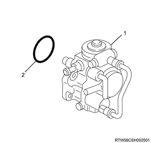
- Supply pump
- O-ring
Caution
- Do not hold the high-pressure pipe when carrying the supply pump.
92. Timing chain removal
1. Remove the sprocket from the idle gear D.
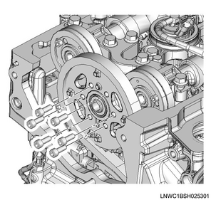
2. Remove the timing chain from the cylinder head.
Note
- Remove the timing chain and sprocket as a set from the lower sprocket.
93. Timing chain tension lever removal
1. Remove the timing chain tension lever from the cylinder head assembly.
Note
- Pull out the timing chain tension lever.
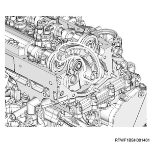
94. Timing chain guide removal
1. Remove the timing chain guide from the cylinder head and the cylinder block.

95. Camshaft bracket removal
1. Remove the camshaft bracket from the cylinder head.

- Camshaft bracket
- Cylinder head
96. Cylinder head assembly removal
1. Remove the nut from the timing gear case.
2. Remove the bolt from the timing gear case.
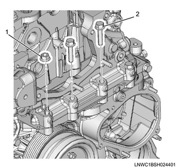
- Nut
- Bolt
3. Remove the head bolt from the cylinder head.
Note
- Loosen it in the order shown in the diagram.
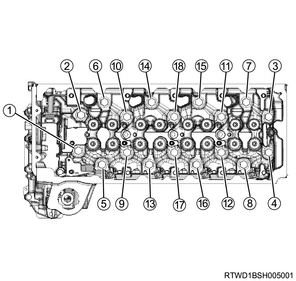
Caution
- Do not reuse the head bolt.
4. Remove the cylinder head assembly from the cylinder block.
Note
- Install the wire to the engine hanger and the hoist to lift the cylinder head assembly.
97. Cylinder head gasket removal
1. Remove the cylinder head gasket from the cylinder head.
Caution
- Do not reuse the cylinder head gasket.
98. Crankshaft pulley removal
1. Remove the crankshaft pulley from the crankshaft.
Caution
- Do not reuse the crank pulley bolt and the washer.

99. Water pump assembly removal
1. Remove the water pump assembly from the timing gear case.

100. Vacuum pump assembly removal
1. Remove the vacuum hose from the vacuum pipe and the vacuum pump assembly.

2. Remove the vacuum pump oil pipe from the vacuum pump assembly and the cylinder block.

3. Remove the vacuum pump assembly from the gear case cover.
101. Cover removal
1. Remove the cover from the gear case cover.

102. Gear case cover removal
1. Remove the gear case cover from the timing gear case.
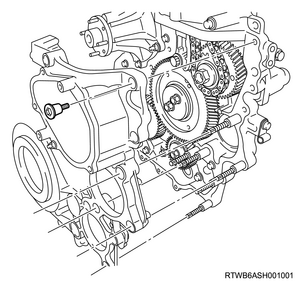
103. Idle gear A removal
1. Install the bolt to the idle gear A.
Note
- Install the M6 bolt.
2. Remove the idle gear A flange from the idle gear A.
3. Remove the idle gear A from the idle gear A shaft.
4. Remove the idle gear A shaft from the timing gear case.

104. Idle gear C removal
1. Remove the idle gear C from the idle gear C shaft.
2. Remove the idle gear C shaft from the timing gear case.

105. Crank gear removal
1. Remove the crank gear from the crankshaft.
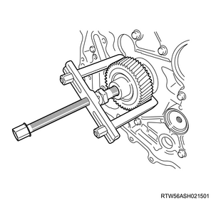
106. Oil pump assembly removal
1. Remove the oil pump from the timing gear case.

- Oil pump
107. Timing gear case bracket removal
1. Remove the timing gear case bracket from the timing gear case and the cylinder block.

- Timing gear case bracket
108. Timing gear case removal
1. Remove the timing gear case from the cylinder block.
2. Remove the gasket from the cylinder block.

- Timing gear case
- Gasket
Caution
- Do not remove the bolt (7) indicated in the diagram during maintenance.
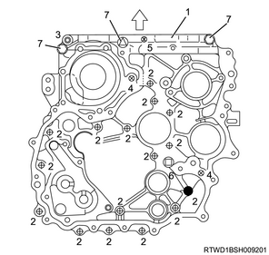
- Timing gear case
- Bolt L = 25 mm {0.98 in}
- Bolt L = 60 mm {2.36 in}
- Bolt L = 45 mm {1.77 in}
- Bolt L = 35 mm {1.38 in}
- Bolt L = 16 mm {0.63 in}
- Bolt
109. Flywheel removal
1. Remove the flywheel from the crankshaft.
Note
- Gradually loosen the flywheel mounting bolts in the order shown in the diagram while confirming that the flywheel does not rotate.

2. Remove special tool from the rear plate.
Note
- Remove the crankshaft stopper from the starter installation section of the rear plate.
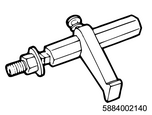
SST: 5-8840-0214-0 - crankshaft stopper
Note
- For automatic transmission vehicles, after loosening the flywheel mounting bolts, remove the washers, flexible plate, flywheel and sleeve in that order.
110. Rear plate removal
1. Remove the rear plate from the cylinder block and the crankcase.
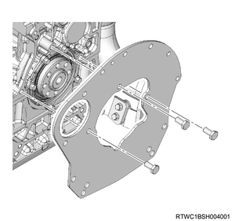
111. Oil seal retainer removal
1. Remove the oil seal retainer from the cylinder block and the crankcase.
Note
- Remove it together with the oil seal.

112. Crankcase removal
1. Remove the crankcase from the cylinder block.
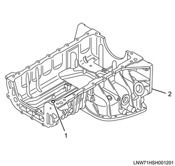
- O-ring
- Crankcase
Caution
- Take care not to damage the O-ring.
113. Piston removal
1. Clean the cylinder block using a scraper.
Note
- Remove any carbon from the top of the cylinder bore using a scraper.
2. Turn the crankshaft.
Note
- Set the piston of the cylinder to be removed to bottom dead center.
3. Remove the connecting rod bearing cap from the connecting rod.
4. Remove the connecting rod bearing from the connecting rod bearing cap.
Note
- Organize the removed bearings according to the cylinders using tags.
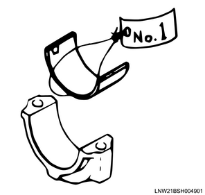
5. Turn the crankshaft.
Note
- Set the piston of the cylinder to be removed to top dead center.
6. Remove the piston from the cylinder block.
Note
- Pull the piston and the connecting rod out from the cylinder head side.
- Push out from the lower end of the connecting rod by using the handle of a hammer, etc., so as not to damage the bearing.
Caution
- When pushing out the connecting rod, be careful not to damage the oil jet and the cylinder inner surface.
7. Remove the connecting rod bearing from the connecting rod.
Note
- Organize the removed bearings according to the cylinders using tags.